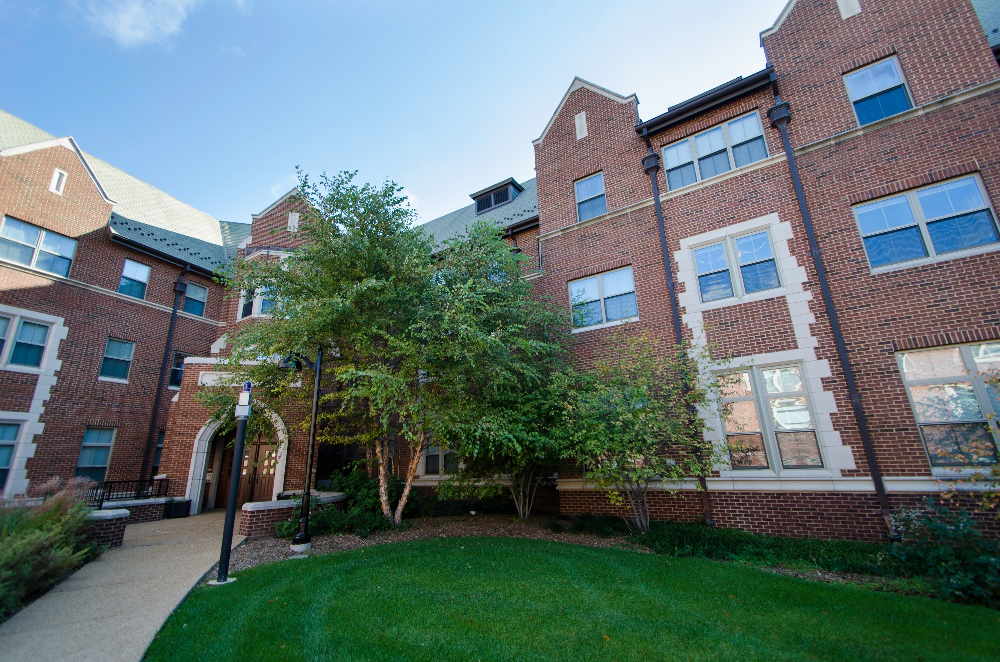

Washington University in St. Louis
Transfer Student
We want you to feel as comfortable as possible when you transition into a new college! Transfering schools can be stressful, and we also know that the most important way to feel home with a new college is to live on campus. To help chose which type of housing would fit with your personality best, here is a list of the on-campus options!
Traditional Housing (South 40)
The South 40 is where all sophomore and freshmen live and it is south of the main campus.Traditional housing is in the older dorms with communal bathrooms in each floor. While these dorms may be older, it creates a very tight bond within in each floor. Many students who want a community feel and home-y vibe prefer the traditional dorm.
Modern Housing (South 40)

Modern housing in the South 40 are all new dorms with suite style room where 2-4 students share a bathroom. These dorms are stunning and a great fit for students who want more privacy and a more modern vibe.
The Village

The Village dorms are for juniors and seniors and they are located north of the main campus. These dorms are all modern and designed to look like apartments so it can range from 2-8 students sharing a bathroom. Each suite has a common room so it is great for students who want a kitchen, living room, dining room, and large space for get togethers.